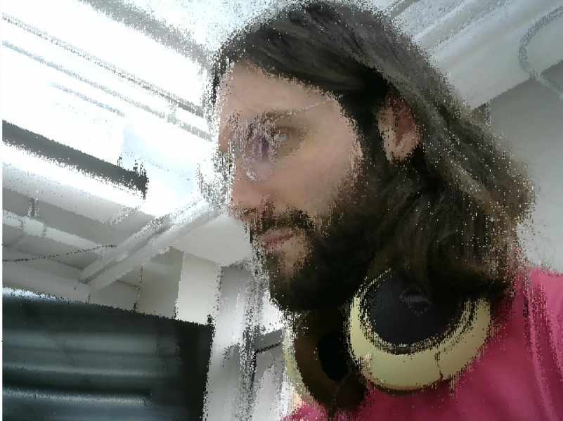

This week's assignment was to do something with color. I didn't have an idea right off the bat for this one like I did last week, so I thought I would start with something simple and then... work my way up.
So I started with ripples. Water has been on my mind recently, for a number of reasons, and I thought there might be some interesting things I could do with them. I googled P5 ripples real quick and the first link took me to this sketch, which had a very basic ripple object constructed. I used that as a template, and then changed the constructor and the draw and setup functions to have a few more parameters for colors.
I changed the mouseClick function so that it would create a ripple in a random place, rather than just creating it wherever the mouse was pressed. Then, I changed it so that the stroke of the ripple would be a random color that was between 0 and the current diameter of the ripple, so that the color would gradually flash more colors.
This was pretty and came up with some nice ripples, but I felt like there was more that I could do, and I wanted to utilize a bit more of what we'd learned this week. So, I decided I would make something happenw when the ripples intersected. Trying to figure out how ripples intersect turned out to be pretty tough, especially because we had an array of ripples. I watched through this Coding Train video on object intersections and was able to get the sketch to recognize when the ripples were intersecting, but then I had to figure out what I wanted them to do after the intersected. Since we'd gone over lerpcolor in class, I thought it'd be a good time to test it out. So, I told the sketch that when the ripples intersected I wanted to have the ripples fill with the lerp color of the two ripple strokes. The end result... was pretty trippy.
As we go through life we change and expand, and sometimes we meet others who feel like they help fill us up and round us out in ways we hadn't anticipated. So, this is a sketch for those people.
Code can be found here.
 Comments? Questions? Concerns? Email me here!